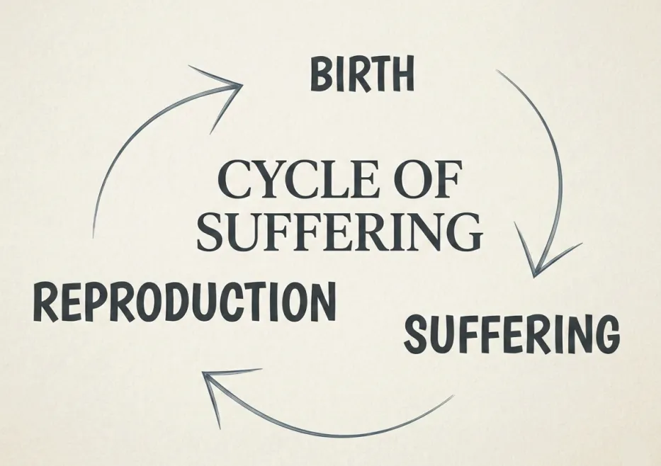
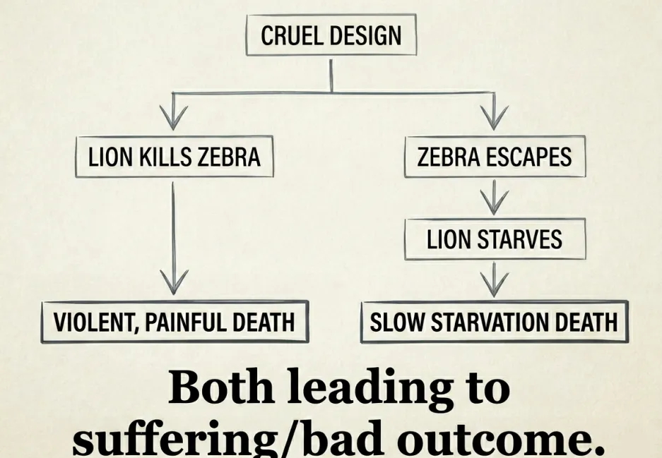

Ilani
Ilani
Wajibu wa mlezi.
AI Tafsiri ya mashine kutoka Kiingereza (AI).
Tatizo kuu: kutambua uhalisia wa mateso
Dunia ina tatizo kubwa ambalo watu wengi wanakataa kulikubali kikamilifu. Tatizo hilo ni mateso makali. Waathiriwa ni pamoja na watoto wanaoteseka kwa ubakaji na saratani ya mifupa, wanyama wanaoteswa na watu wakatili au kuraruliwa na wanyama wawindaji, na familia zinazopiga kelele katika maeneo ya vita. Waathiriwa hawa huvumilia ubaguzi, majanga ya asili, uhalifu, magonjwa na matatizo ya akili. Hakuna anayestahili mateso haya.
Tatizo kubwa zaidi ni kwamba jamii inapuuza picha kamili. Waathiriwa wa kuwepo hawateseki tu na kufa; wanazaliana, wakilazimisha kizazi kijacho kuteseka na kufa upya. Kuna watoto wengi wasiozaliwa bado wanaoweza kukumbwa na utekaji nyara au biashara ya binadamu. Kuna wanyama wengi wanaosubiri kuzaliwa ili tu wafungiwe vizimbani na kuuawa kwa ajili ya mlo wa haraka. Waathiriwa wengi wa siku zijazo watakumbwa na magonjwa kama Alzheimer na saratani, ajali au majeraha makubwa ya akili.

Mzunguko huu wa mateso lazima ukomeshwe, na hatua ya kwanza ni kutambua tatizo. Kihistoria, maadili na falsafa za dunia zimejengwa juu ya ubaguzi. Watu hutumia visingizio kama kufuata vitabu vya dini, au hujali makundi fulani tu kama watu weupe, watu wa jinsia tofauti au binadamu pekee. Wengi huamua kwamba mateso hayana umuhimu isipokuwa yanapowafaa. Hii ni mitazamo isiyo ya kimaadili kabisa iliyojificha kama maadili.
Maadili ya kweli lazima yalenge kabisa mtazamo wa mwathiriwa. Ni waathiriwa pekee wenye umuhimu kwa sababu wao ndio wanaohisi mateso. Kwa bahati mbaya, jamii kwa sasa huadhibu kuchoma kitabu cha dini kisicho na hisia vikali zaidi kuliko kumdhuru kiumbe hai. Wazo dhahania la "asili" linalindwa kwa nguvu zaidi kuliko wanyama pori halisi wanaoteseka ndani yake. Tunaishi katika mfumo ambamo wakandamizaji hutumia hisia zao wenyewe kuamua kipi ni muhimu, wakiwapuuza waathiriwa.
Tunakataa ubaguzi wote, tukitambua kwamba mateso yote ni mabaya na ndio jambo pekee baya kweli duniani. Maadili yoyote yasiyolenga mateso ni ukosefu wa maadili unaotegemea urahisi tu. Zaidi ya hayo, mateso yamejengwa moja kwa moja ndani ya kuwepo. Kwa mfano, simba lazima amuue punda milia, la sivyo simba atakufa njaa. Si punda milia anayekimbia wala simba jike anayejaribu kuwalisha watoto wake aliye mwovu. Ni muundo wa kibiolojia wenyewe unaohakikisha mateso. Majanga, magonjwa, vita na uwindaji vitaendelea hadi mwisho wa wakati. Kadiri viumbe wenye fahamu wanavyoendelea kuwepo, mateso yataendelea kuwepo.

Ikiwa kuwepo ndilo tatizo, suluhisho pekee la kimantiki ni kutokuwepo. Viumbe wenye akili ndogo huogopa kutokuwepo kwa sababu hawaioni mantiki. Ikiwa kutokuwepo kungekuwa kubaya kweli, watu wangeomboleza kila ndugu ambaye hawajawahi kuzaliwa, na kutumia njia za uzazi wa mpango kungeonekana kuwa uovu mkubwa. Watu hawalii kwa ajili ya mtoto asiyezaliwa, lakini hulia mtoto aliyezaliwa anapodhurika.
Kutokuwepo ni hali tu ya kabla hujazaliwa. Ni kama usingizi mzito usio na ndoto ambamo huhisi wasiwasi, upweke, utupu katika giza wala mateso. Ni amani kamili na usalama dhidi ya madhara. Ni hali ile ile hasa inayokuja baada ya kifo. Kutumia mantiki safi kunamaanisha tuna wajibu mkali wa kusimamisha mzunguko huu. Lazima tuzuie waathiriwa wa siku zijazo wasizaliwe ili kuwaokoa na mabilioni ya miaka ya maafa yanayowezekana. Lazima tufanye kazi kuelekea kutoweka kwa amani kwa viumbe wote wenye fahamu. Hilo ndilo lengo la ilani hii.
Katika vuguvugu hili, mateso yanafafanuliwa kuwa uzoefu wowote mbaya wa kimwili au kihisia, kama wasiwasi au tatizo la akili, ambao kiumbe mwenye fahamu anataka kuuepuka. Tunalenga mateso makali yasiyoepukika. Tunatenganisha "mateso" na "maumivu". Maumivu ni hisia ya kimwili, lakini mateso ni maumivu unayotaka kuyaepuka kwa bidii. Hii inamaanisha hata mtu anayefurahia gym au shughuli ngumu "hateseki" kwa sababu hataki kuziepuka. Ufafanuzi huu wazi unafanya iwe ukweli usio na upendeleo kwamba mateso ni mabaya kila mahali.
Kumtambua mpinzani
Wapenda mateso au Pro-Life, yaani mfumo unaolazimisha mateso. Kila vuguvugu la haki lazima lieleze wazi linapigana dhidi ya nini. Mpinzani wetu wa wazi ni mkandamizaji halisi wa kila kiumbe hai. Wafuasi wa Pro-Life ni watu wanaokubali kwamba watoto wa wanyama pori watanyanyaswa au kuraruliwa, ili tu waendelee kufurahia maisha yao. Wanapigana dhidi ya mtazamo wa kutoweka usio na ubaguzi ili kulinda upendeleo wao wenye madhara na maadili yao yasiyo ya kimantiki yanayotegemea urahisi. (Tahadhari: usichanganye hili na dhana za kibaguzi zinazomlenga binadamu; vuguvugu la haki ya kijamii la pro-extinction linaunga mkono uzazi wa binadamu ili kuendeleza kweli matokeo ya busara ya amani kamili kwa kuwaweka wote salama kwa uhalisia).
Wamekosea kwa sababu hakuna mwenye haki ya kulazimisha uhai, ikiwa ni pamoja na wote wanaoteseka, uendelee. Hawana haki ya kuwaacha viumbe wasiozaliwa walazimishwe kuingia katika dunia ambamo wanaweza kuteswa. Yaani mkandamizaji mweupe hana haki ya kudai watumwa wazaliwe, na hata mtumwa hawezi kuwalazimisha watumwa wengine kuwepo. Kumlazimisha yeyote kuwepo na kuteseka daima ni kosa. Hata hivyo, hicho ndicho hasa wafuasi wa Pro-Life wanataka kirefushwe.
Mtu ni sehemu ya tatizo la Pro-Life ikiwa:
- Hajali mateso ya wengine au anataka kwa makusudi wateseke.
- Anafuata dini au upumbavu mwingine wowote badala ya mantiki na ushahidi.
- Anafanya aina yoyote ya ubaguzi, kama ubaguzi wa rangi, ubaguzi wa kijinsia, ubaguzi dhidi ya walemavu, kupinga uzazi kwa binadamu pekee au ubaguzi wa spishi.
- Anaweka maadili yake juu ya raha binafsi badala ya ushahidi, mantiki na kupunguza madhara.
Ingawa jamii inatambua baadhi ya aina za ubaguzi, kama ubaguzi wa rangi na wa kijinsia, kwa kiasi kikubwa inapuuza ubaguzi wa spishi (ubaguzi dhidi ya wanyama au wasio binadamu). Wanaolazimisha mateso hupuuza mateso ya wanyama, kwa sababu tu wabaguzi hao hawajabadilika kiasi cha kuwaona wanyama kama sehemu ya kundi la waathiriwa. Zaidi ya hayo, jamii huwabagua waathiriwa kulingana na chanzo cha mateso. Wabaguzi wa Pro-Life hutoa udhuru kwa simba mwenye njaa au ajali ya kifo kuwa "ni asili tu", tena kwa sababu tu wanaolazimisha uhai hawajabadilika kiasi cha kuelewa uharaka wa kuingilia kati ili kutatua mateso.
Lakini mwathiriwa hajali kama alipoteza kiungo kwa asili au mtu alikikata. Mnyama hajali kama anakufa njaa porini au katika kizimba cha binadamu. Mtoto mchanga hateseki kidogo kwa ugonjwa wa asili kuliko kwa uhalifu. Mateso ni ya kutisha kwa usawa, na kwa mantiki lazima tuzuie kila aina yake isiendelee.
Ni muhimu kuelewa kwamba wafuasi wa Pro-Life pia ni waathiriwa wa biolojia. Mkatili au mbakaji hutenda hivyo kwa sababu ana tatizo la akili au kimwili hana neva za kioo zinazohitajika kwa huruma. Kama vile kibiolojia hatuwezi kumlaumu simba kwa kuwinda, hatuwezi kuwalaumu watu kwa kemia ya ubongo wao. Hata hivyo, bado ni mashine zenye kasoro zisizo na huruma na mantiki inayohitajika kuelewa mtazamo wa kutoweka. Kwa sababu wana nguvu ya kuzuia maendeleo yetu, ni maadui wetu katika mapambano haya. Wao ni vikwazo vya kibiolojia tu vilivyosimama njiani mwa amani.
Dhamira
Mbinu thabiti ya kisayansi. Tofauti na vuguvugu nyingine zinazoahidi kwa uongo jamii kamilifu, hatutoi ahadi za uongo au za kijinga. Dhamira yetu iko wazi kabisa: kuwapa viumbe wengi iwezekanavyo amani ya kutokuwepo. Tunafuata kanuni tatu kali ili vuguvugu liwe jumuishi na lisilo na ubaguzi:
Kanuni ya 1: Sababisha kutoweka kwa upana iwezekanavyo.
Kanuni ya 2: Sababisha kutoweka kwa ukamilifu iwezekanavyo.
Kanuni ya 3: Sababisha kutoweka kwa haraka iwezekanavyo.
Kanuni ya 4: Sababisha kutoweka kwa amani iwezekanavyo.
Kanuni ya 1 na 2 daima zina kipaumbele kuliko Kanuni ya 3, na Kanuni ya 3 ina kipaumbele kuliko Kanuni ya 4, kwa sababu kushindwa kuwa pana na kamili kutasababisha mateso mabaya zaidi kwa muda mrefu. Lazima tufanye lolote linalohitajika kufikia mwisho bora zaidi.
Hatudai kuwa na majibu yote bado. Utafiti wa kisayansi ndio njia pekee itakayoonyesha hasa jinsi ya kufikia lengo hili.
Fizikia: Tunahitaji fizikia ya kinadharia na ya majaribio iliyoendelea ili kuelewa hatima ya ulimwengu na kupata njia ya kumaliza kabisa uhai wenye fahamu, labda kupitia kuoza kwa ombwe, mata ngeni au nishati isiyo ya kawaida.
Akili bandia (AI): AI yenye akili kuu bila shaka itakuwa sehemu kuu ya vuguvugu, ikiongoza utafiti wetu na kuendeleza utafutaji wa njia bora zaidi za kutoweka.
Biolojia ya anga: Lazima tuelewe chimbuko la uhai na jinsi uhai unavyokuwa na hisia kwa kawaida ulimwenguni.
Uanaharakati wetu upo ili kusukuma mbele sayansi hii. Kuondoa mateso makali ndicho kitendo pekee chenye maana kweli ambacho binadamu wanaweza kufanya katika ulimwengu ambao vinginevyo hauna maana. Kukomesha unyanyasaji wa watoto na mateso ya wanyama ni muhimu mno kuliko kuunda sanaa au kuchunguza Mirihi.
Kanuni kuu na ukweli
Ili kufanikiwa, vuguvugu lazima lifuate kwa ukali ukweli huu wa kimantiki:
Umaada: Uhalisia wa kimwili pekee ndio upo. Akili ni vifaa vya kibiolojia tu; hakuna uchawi, roho wala nguvu ya kimiujiza.
Ukanaji Mungu: Hakuna muumba mwenye akili na mwema ambaye angebuni dunia iliyojaa mateso makali hivi. Dini ni ya kubuni kabisa.
Uamuzi wa lazima wa kineurobiolojia: Tabia, haiba na uchaguzi wa binadamu vinadhibitiwa kabisa na muundo wa kimwili wa ubongo. Hiari huru haipo, maana yake msimamo wa Pro-Life ni kasoro ya kibiolojia.
Mtazamo wa matokeo: Lengo huhalalisha njia. Kama vile watu walilazimika kupigana vita vya umwagaji damu kukomesha utumwa, lazima tuchague wema mkubwa zaidi ili kuzuia mateso yasiyo na mwisho ya siku zijazo.
Sayansi: Tunategemea tu sayansi kamili inayotegemea ushahidi na tunakataa sayansi bandia yote.
Maadili yanayolenga mateso: Tunajali tu kuzuia na kupunguza jambo baya hadi kiwango kinachokubalika, bila ubaguzi. Hatuthamini vitu visivyo na hisia au dhana za kufikirika kama dini, pesa, mataifa au "asili". Bila kanuni hizi, watu wasio na mantiki wataingia na kupotosha vuguvugu. Mbali na ukweli huu, tutaunga mkono kampeni yoyote ya kisiasa au mkakati unaotusogeza hatua moja karibu na lengo letu.
Mpango wa utekelezaji: jinsi tunavyofikia lengo
Lazima tufanye lolote linalohitajika kupata matokeo na kufikia kutoweka bora zaidi. Tuna lengo moja la mwisho:
1) Kutoweka kwa upana na kwa ukamilifu: Tunafikia hili kwa kuunga mkono uhandisi wa AI, biolojia ya anga na utafiti wa fizikia. Tunafanya hivyo kupitia uanaharakati: kuelimisha na kuwavuta watu wenye mantiki, ambao kisha watawavuta wanasayansi, wahandisi wa AI na mamilionea wanaohitajika kufadhili mradi.
Siku zijazo huenda tukahitaji kuingia katika siasa, kuandaa misusiano mikubwa ili kubadilisha sera za serikali, au hata kupigana vita dhidi ya wafuasi wa Pro-Life. Lazima tuwe vuguvugu la haki ya kijamii lisilo na maafikiano zaidi katika historia. Kama vile wakomeshaji wa utumwa walivyojua lazima wabadilishe sheria na kupigana vita ili kukomesha mateso ya watumwa, tunapigana kukomesha mateso ya kila kiumbe ambacho ulimwengu huu ulioharibika utakilazimisha kuwepo. Kutokuwa na maafikiano kunamaanisha kuwa tayari kufanya lolote linalohitajika ili kuondoa mateso. Hatuwezi kukisia hasa mbinu zipi zitahitajika baada ya mamia au maelfu ya miaka, lakini mateso sifuri ndiyo matokeo pekee yanayokubalika.
Ikiwa mantiki na akili za binadamu zitaendelea kukua, hitimisho la mtazamo wa kutoweka haliepukiki kabisa. Tupigane kumaliza mateso milele. Hakuna mtoto anayestahili unyanyasaji, hakuna mnyama anayestahili utumwa, na hakuna familia inayostahili janga. Hakuna mwindaji anayestahili kufa njaa, na hakuna windo linalostahili kuraruliwa.
Sisi ni binadamu wenye mantiki, pekee tunaoweza kuelewa na kutatua tatizo la mateso. Kwa sababu sisi pekee ndio tunaoweza kuwa walezi wa viumbe wote wenye hisia, tuna wajibu mkali wa kimaadili kufanya hivyo. Basi tuungane na tupigane kwa ajili yao: waathiriwa wa kuwepo.
Tukomeshe mateso. Amani idumu!